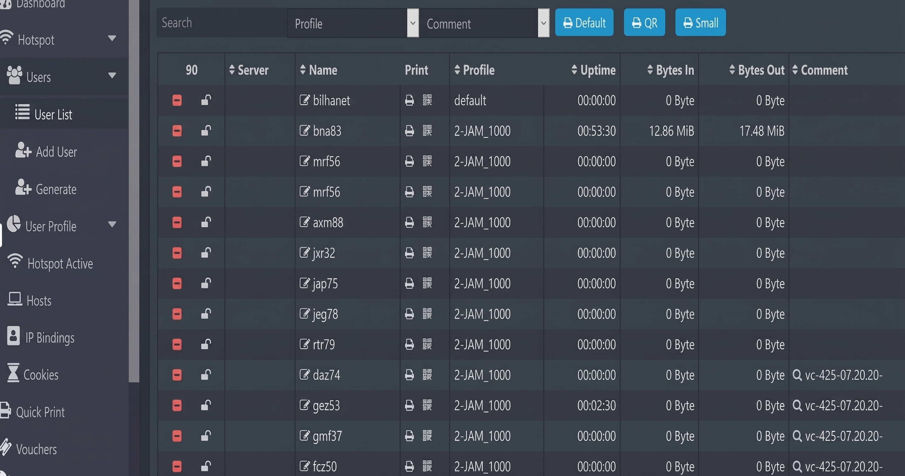

Showcase Karya
Proyek Data & Jaringan
Klik pada gambar untuk melihat tampilan penuh (Full Screen View)

Automotive Sales Dashboard
Memvisualisasikan data penjualan otomotif dengan KPI Total Sales Rp324,67B, analisis tren bulanan, produk terlaris (Honda CR-V, Fortuner), serta strategi mitigasi pembatalan kredit.

SuperMarket Dashboard Sales
Dashboard interaktif untuk pemantauan penjualan supermarket. Menyajikan KPI Revenue, Net Revenue, dan Profit Margin serta membandingkan performa antar lini produk secara real-time.

MikroTik Hotspot Management
Konfigurasi dan manajemen jaringan Hotspot berbasis RouterOS. Mengatur hak akses user, alokasi profil bandwidth, generate voucher kuota, dan monitoring traffic jaringan.